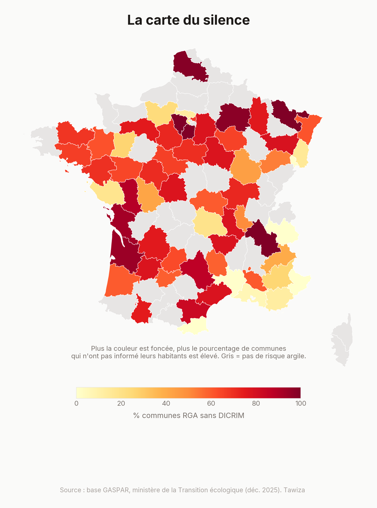
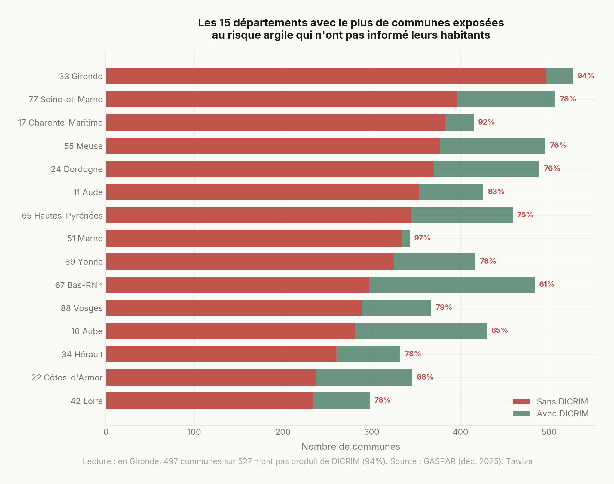
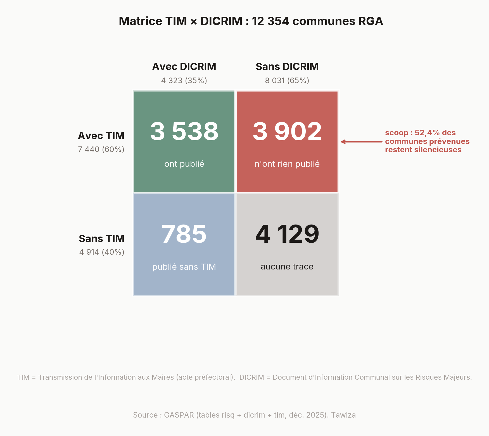
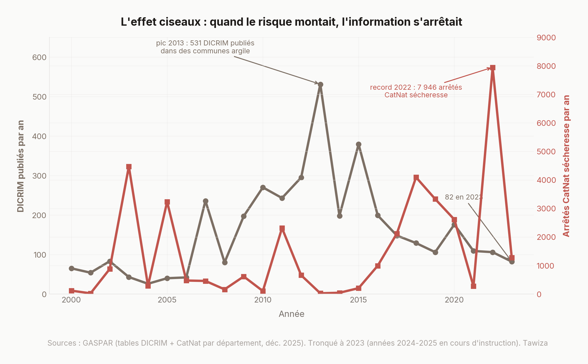
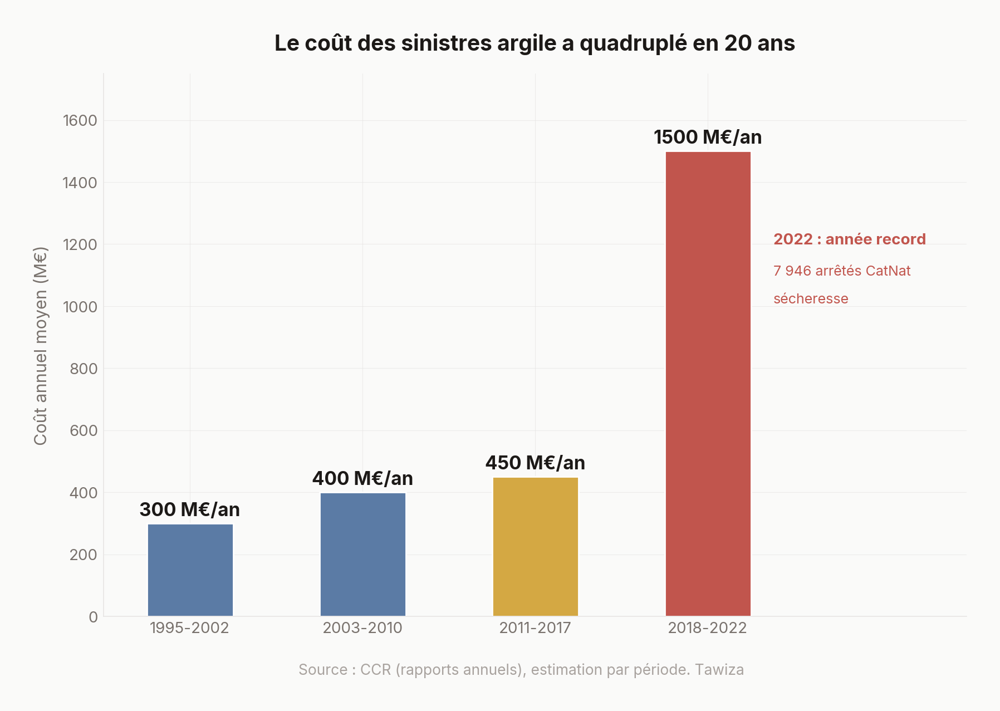

Risque argile : 65% des communes concernées n'ont jamais prévenu leurs habitants
Avril 2026 · Tawiza · Analyse reproductible
12,1 millions de maisons françaises sont exposées au retrait-gonflement des argiles. La loi oblige les communes à informer leurs habitants. On a compté : 8 031 communes RGA sur 12 354 n'ont jamais produit le document légal. Le coût des sinistres a quadruplé en vingt ans. La surprime d'assurance augmente. Le fonds de prévention couvre 11 départements sur 96. On a regardé qui savait, qui payait, et qui ne disait rien.
Le sol bouge. Personne n'écrit.
Août 2025, quelque part entre Orléans et Montargis. Trente-huit degrés depuis trois semaines. Dans un lotissement des années 90, une fissure remonte le long du mur du salon, du carrelage jusqu'à la fenêtre. Nette, verticale, 2 millimètres d'épaisseur. Puis une deuxième au-dessus de la porte du garage, en diagonale - la signature classique d'un tassement différentiel. L'enduit tombe par plaques dans le jardin.
Le propriétaire appelle son assureur. La réponse tient en une phrase : « Votre commune n'a pas été reconnue en catastrophe naturelle. Ce n'est pas couvert. »
L'artisan, lui, est plus direct : « Votre maison est sur de l'argile. Quand il fait sec, le sol se rétracte. Quand il repleut, il gonfle. Vos fondations bougent. Comptez entre 15 000 et 40 000 euros pour stabiliser. »
Quelques semaines plus tard, en cherchant sur Internet, le propriétaire tombe sur un site du gouvernement - georisques.gouv.fr - où une carte en couleurs lui apprend que sa parcelle est classée en exposition « forte » au retrait-gonflement des argiles. Un arrêté du 9 janvier 2026 vient d'étendre cette classification. Sa maison est sur une liste depuis des mois.
Il ne le savait pas. Il ressort son dossier d'achat et cherche l'État des Risques et Informations sur les Sols - ce document obligatoire depuis 2006 que le vendeur doit remettre à l'acheteur, sous peine de nullité de la vente. Il le trouve. Une case est cochée « retrait-gonflement des argiles ». Personne ne la lui avait commentée. Entre les quinze documents signés ce jour-là chez le notaire, celui-là est passé comme les autres. Ni sa mairie, ni son assureur, ni son notaire ne lui avaient dit ce que cette case voulait dire.
Il n'est pas seul. Ils sont 12,1 millions.
Ce que l'État a fait (et c'est réel)
Soyons honnêtes : l'État n'est pas resté les bras croisés. La carte existe. Le BRGM l'a construite et l'affine depuis plus de vingt ans à partir de dizaines de milliers de sondages géologiques - la Banque de données du Sous-Sol (BSS) en recense plus de 800 000, dont une large fraction nourrit la cartographie départementale du RGA. Le ministère l'a mise à jour. L'arrêté du 9 janvier 2026 étend les zones de « moyenne et forte exposition » à 55% du territoire métropolitain, contre 48% auparavant : près de 12 millions de maisons individuelles sont désormais classées, soit 61,5% du parc, contre 52,5% en 2020. L'élargissement lui-même est une reconnaissance politique de l'ampleur du phénomène.
Il y a aussi un fonds de prévention argile, lancé en octobre 2025, qui finance diagnostic et travaux préventifs à hauteur de 80-90% pour les propriétaires éligibles. Le député Vincent Ledoux (Nord) a remis 30 recommandations au ministre de l'Intérieur en octobre 2023, dans un rapport au titre prémonitoire : « N'attendons pas que ce soit la cata ! » Il y proposait un « bouclier CatNat », des cellules de crise départementales, 1 000 stations météo du sol.
Tout cela est vrai.
Mais le fonds couvre 11 départements sur 96. Il exige d'être propriétaire occupant, en résidence principale, en zone d'exposition forte, sous conditions de revenus. Et les 30 recommandations Ledoux ? Deux ans plus tard, un pilote beta.gouv.
Il y a un mot pour ça : de l'information passive dans un pays d'information active. L'État a cartographié le risque. Il attend que vous trouviez la carte.

8 031 communes : le document que personne n'a écrit
Voici un chiffre que vous ne trouverez nulle part ailleurs. On l'a calculé nous-mêmes, à partir de la base GASPAR du ministère de la Transition écologique (mise à jour décembre 2025).
La loi est claire. L'article L.125-2 du Code de l'environnement dispose que toute commune exposée à un risque majeur doit informer ses habitants via un DICRIM - Document d'Information Communal sur les Risques Majeurs. Ce n'est pas une recommandation. C'est une obligation légale.
On a compté :
- 12 354 communes sont exposées au risque « tassements différentiels » (le nom technique du RGA dans la base GASPAR)
- 4 323 ont produit un DICRIM
- 8 031 n'en ont jamais produit
Soit 65% des communes exposées qui n'ont jamais rédigé le document que la loi leur impose.
Pour mettre ça en perspective : en Marne, le taux de conformité est de 2,6%. En Gironde, 5,7%. Dans le Pas-de-Calais, voisin immédiat du département du député Vincent Ledoux - celui qui a écrit « n'attendons pas que ce soit la cata ! » - il n'est que de 1,3% : 78 communes exposées sur 79 n'ont pas de DICRIM.
À l'inverse, le Gard atteint 99,4%. Le Bas-Rhin, 38,6%. La différence ? L'animation préfectorale. Quand la préfecture accompagne les communes, elles suivent. Quand elle laisse faire, c'est le silence.
Et puis il y a le Nord. Dans la base GASPAR de décembre 2025, le Nord - département du rapporteur Ledoux - ne compte aucune commune marquée au risque « tassements différentiels ». Zéro. Pourtant, le Nord figure dans la liste des 11 départements pilotes du fonds de prévention argile lancé en octobre 2025. L'État finance la prévention là où sa propre base de données ne dit pas qu'il y a un risque à prévenir. Deux administrations, deux vérités. Le RGA existe dans une base et pas dans l'autre.

La chaîne d'information cassée
Avant d'accuser les maires, il faut regarder ce que l'État leur a officiellement transmis.
Depuis les années 1990, chaque préfet est tenu d'établir un Dossier Départemental des Risques Majeurs (DDRM) et de le transmettre formellement à chaque maire dont la commune est exposée. Cette transmission - appelée TIM, pour Transmission de l'Information aux Maires - est enregistrée dans une table dédiée de GASPAR, avec sa date. Ce n'est pas une circulaire oubliée dans un tiroir : c'est un acte administratif daté, signé, traçable. Elle déclenche l'obligation communale de rédiger un DICRIM.
On a croisé cette table avec celles qu'on utilisait déjà. Voici ce qu'on trouve pour les 12 354 communes exposées au risque argile :

Le chiffre qui nous intéresse est celui en haut à droite, en rouge : 3 902 communes ont reçu du préfet la transmission officielle de l'information sur les risques, et n'ont jamais publié de DICRIM. Cela fait 52,4% des communes RGA officiellement prévenues.
Et ces communes ne sont pas des retardataires de quelques mois. Voici depuis combien de temps chacune d'elles attend, en décembre 2025 :
| Date de la transmission préfectorale reçue | Communes RGA encore silencieuses |
|---|---|
| Avant 2010 (≥ 15 ans d'inaction) | 1 355 |
| 2010-2014 (11-15 ans) | 1 595 |
| 2015-2019 (6-10 ans) | 451 |
| 2020-2022 (3-5 ans) | 324 |
| 2023-2025 (< 3 ans, potentiellement trop récent pour juger) | 177 |
2 950 communes ont reçu la transmission préfectorale avant 2015. Elles ont eu au moins dix ans pour publier leur document légal. Elles ne l'ont pas fait.
Pour celles qui finissent par s'exécuter, la cadence est tout aussi révélatrice. Sur les 2 072 communes RGA qui ont réagi en publiant un DICRIM après avoir reçu la transmission, le délai médian entre les deux actes est de 2 949 jours, soit 8,1 ans. Le système administratif du risque argile opère à rythme quasi décennal.
Et le rythme se dégrade, pile au moment où le risque se manifeste. Le nombre de DICRIM publiés chaque année dans les communes RGA s'effondre alors que les arrêtés CatNat sécheresse battent des records. En 2013, 531 DICRIM avaient été publiés dans des communes argile. En 2022 (année record avec 7 946 arrêtés), 106. En 2023, 82. En 2024, 77. En 2025, 30. Divisé par plus de dix-sept en douze ans.

La chaîne formelle d'information existe. Elle a été activée pour la majorité des communes exposées. Elle n'a rien déclenché en aval.
Ce constat ne dit pas que les maires sont « coupables » au sens moral. Il dit quelque chose de plus froid : le dispositif a un coût administratif - rédiger un DDRM, le signer, le transmettre, tenir le registre - et ce coût a été payé. L'étape suivante, celle qui touche vraiment les habitants, n'a pas suivi pour plus d'une commune prévenue sur deux.
Ce n'est donc plus exactement de l'ignorance. La section suivante essaie de dire ce que c'est.
Pourquoi les communes ne font rien
On pourrait croire à de la mauvaise volonté. C'est plus simple que ça.
L'ignorance - mais plus seulement. Une enquête téléphonique menée auprès de 1 033 communes (Douvinet et al., Cybergeo, 2013) a révélé que plusieurs maires « affirment ne rien savoir sur le DICRIM ». Certains pensent que l'obligation ne concerne que les villes de plus de 5 000 habitants. C'est faux, mais personne ne les a corrigés. Cette explication reste valide pour les communes qui n'ont jamais reçu de transmission préfectorale enregistrée - ce qu'on ne peut pas quantifier précisément, les dossiers les plus anciens n'étant pas tous numérisés dans GASPAR. Elle ne tient plus pour les 3 902 communes où la TIM est documentée, datée, et sans suite. Celles-là savent. Ou plus exactement : l'administration peut prouver qu'elles ont été prévenues.
Le manque de moyens. Rédiger un DICRIM demande de l'expertise, du temps, parfois un prestataire. Pour une commune de 300 habitants avec un secrétaire de mairie à mi-temps, c'est un horizon lointain.
Le non-dit immobilier. Celui-ci, on ne le trouvera dans aucun rapport officiel. Mais informer officiellement les habitants que leur sol est instable, c'est potentiellement faire baisser les prix. L'agent immobilier du coin a le numéro du maire. Le maire le sait.
L'absence totale de sanctions. Aucune sanction n'est prévue pour non-réalisation du DICRIM. La seule condamnation pénale connue d'un maire pour défaut d'information sur un risque majeur concerne La Faute-sur-Mer, après la tempête Xynthia en 2010. Vingt-neuf morts par submersion marine. Quatre ans ferme en première instance, deux avec sursis en appel. Rien à voir avec l'argile - il fallait vingt-neuf cercueils et un risque brutal pour qu'un tribunal regarde si un maire avait fait son travail d'information. Le RGA, lui, tue lentement, au rythme des fissures qui s'élargissent et des patrimoines qui fondent. Aucun cadre juridique ne sait quoi faire d'un risque lent.
Les maires ne sont pas méchants. Ils sont seuls, pas formés, pas sanctionnés, et parfois un peu arrangés par le silence.
Le patrimoine qui fond
On a croisé deux bases de données que personne ne croise : les zones RGA (GASPAR) et les prix immobiliers (DVF 2024, data.gouv.fr).
Le résultat est un graphique qui parle tout seul.

En haut à gauche du nuage de points : des départements où les maisons ont un prix médian compris entre 100 et 200 000 euros ET où plus de 70% des communes exposées n'ont pas produit de DICRIM. En bas à droite : les départements plus aisés, avec des taux de conformité DICRIM plus élevés.
On ne prouve pas, avec un simple nuage de points, que c'est le RGA qui fait baisser les prix, ni que c'est la pauvreté qui empêche les DICRIM. La corrélation ne dit rien de la causalité - on y reviendra en fin d'article. Mais une chose est visible à l'œil nu : le croisement existe. L'information sur le risque ne voyage pas dans les mêmes territoires que le patrimoine.
Le RGA ne choisit pas ses victimes selon leur revenu. Mais l'information, elle, a des préférences sociales.
43 milliards : la facture qui arrive
Le coût annuel moyen des sinistres RGA a quadruplé en vingt ans.

375 millions d'euros par an entre 1995 et 2015. 1,5 milliard entre 2018 et 2022. L'année 2022 a battu tous les records : environ 6 800 communes reconnues en catastrophe naturelle sécheresse, contre 4 437 en 2003 - près du double, pour une population exposée comparable.
Sur la période 2020-2050, la CCR (réassureur public) estime le coût cumulé à 43 milliards d'euros. Trois fois la période précédente. Le changement climatique expliquerait à lui seul 17 milliards de cette hausse.
Le RGA est devenu en 2022 la première cause d'indemnisation au titre des catastrophes naturelles, devant les inondations. Et pourtant, quand on demande aux Français de citer un risque naturel, personne ne pense à l'argile.
Les assureurs : 720 millions de plus, zéro courrier
Au 1er janvier 2025, la surprime CatNat sur les contrats d'assurance habitation est passée de 12% à 20%. Sur une prime moyenne de 280 euros, c'est environ 22 euros de plus par an et par contrat.
Avec environ 32 millions de contrats habitation de particuliers en France, l'ordre de grandeur de la collecte supplémentaire annuelle sur la seule habitation est de 700 à 800 millions d'euros. Le chiffrage officiel du gouvernement, toutes branches confondues (habitation + entreprises + automobile CatNat), est de 1,2 milliard d'euros supplémentaires par an.
Cette collecte est légitime sur le principe : elle doit refinancer le régime catastrophes naturelles, ébranlé par la multiplication des sinistres. Elle n'est pas destinée à la seule prévention argile. Mais elle fait apparaître un écart de deux ordres de grandeur avec ce qui est consacré à prévenir le RGA : le fonds de prévention argile, pour ses 11 départements pilotes, dispose d'une enveloppe publiquement non chiffrée - aucun montant officiel n'a été communiqué depuis son lancement en octobre 2025. Les estimations qui circulent dans la presse spécialisée évoquent un ordre de grandeur de quelques dizaines de millions d'euros par an. Entre ce qui est collecté et ce qui est explicitement fléché vers la prévention du risque numéro un en coût CatNat, l'écart se compte en multiples à deux chiffres.

Les assureurs utilisent depuis longtemps le risque RGA pour ajuster leurs primes à la parcelle - la Mission Risques Naturels, structure technique des assureurs, croise les données de sinistralité avec l'exposition géologique. Ils pourraient envoyer un courrier à chaque assuré en zone exposée : « Votre maison est en zone RGA. Voici les gestes de prévention. » À la date de cet article, aucun plan d'information ciblée des assurés en zone exposée n'a été annoncé par la Fédération Française de l'Assurance à la suite de la hausse de surprime.
Et quand un sinistre survient, l'indemnisation prend 6 à 12 mois selon les témoignages collectés par l'Association Urgence Maisons Fissurées - contre 2 mois pour une inondation (délai légal de provisionnement). L'instruction d'un sinistre RGA est techniquement plus longue : il faut une étude géotechnique approfondie, parfois suivre un cycle sec-humide complet, faire intervenir un expert. Mais au-delà de la technique, il y a la condition d'entrée : la commune doit être reconnue en catastrophe naturelle. Ce qui, en Auvergne-Rhône-Alpes, n'arrive que dans 10% des cas (source : rapport parlementaire Ledoux, 2023, à partir des données CCR).
La spirale
Chaque maillon aggrave le suivant. Sécheresse, fissures, dévaluation, propriétaire piégé, commune appauvrie, moins de prévention, plus de dégâts. La boucle tourne.

Ce schéma n'est pas une métaphore. C'est un mécanisme documenté. Quand une maison perd sa valeur, le propriétaire ne peut ni vendre ni emprunter pour réparer. Quand les maisons d'un quartier se dévaluent, la base fiscale de la commune s'érode. Quand la commune a moins de revenus, elle investit moins dans la prévention. Et le cycle recommence.
La question n'est pas de savoir si ça va arriver. C'est de savoir combien de tours de spirale il reste avant que ça coûte plus cher de ne rien faire que d'agir.
Josette paie
Ce que les graphiques ne montrent pas, ce sont les trajectoires individuelles derrière les agrégats.
En janvier 2026, TF1 a diffusé un documentaire en deux épisodes : « Sécheresse, inondations : ma maison s'écroule » (Grands Reportages, 4 janvier 2026). Le reportage suit notamment, dans l'Oise, une retraitée que le documentaire appelle Josette. Sa maison est fissurée de part en part. Son assureur conteste l'origine des dégâts. Pour prouver que les fissures viennent du sol, il faut une étude géotechnique approfondie - une étude G5. Coût : plusieurs milliers d'euros. C'est le propriétaire qui paie. Selon le documentaire, elle a déjà dépensé 65 000 euros de sa poche.
Le même reportage suit un couple, également dans l'Oise, qui vit avec ses trois enfants dans une maison étayée pour l'empêcher de se fendre en deux.
On rapporte ces cas non pas pour l'émotion - ils sont rapportés par un autre média, nous ne les avons pas rencontrés - mais parce qu'ils documentent un mécanisme. L'Association Urgence Maisons Fissurées (AUMF) recense des milliers de situations comparables. Elle demande 3,3 milliards d'euros pour indemniser les victimes actuelles, 800 millions récurrents pour les sinistres futurs, et surtout l'inversion de la charge de la preuve : quand un assureur conteste un sinistre RGA, ce serait à lui de financer l'étude géotechnique, pas à la retraitée.
Le Sénat a dit non
Le 6 avril 2023, l'Assemblée nationale a voté quasi-unanimement une proposition de loi pour améliorer l'indemnisation des victimes du RGA. Extension des délais de déclaration, inversion de la charge de la preuve face aux assureurs, meilleure prise en charge des sinistres.
Le 30 mai 2024, la majorité sénatoriale l'a rejetée.
Depuis, les chiffres continuent de monter. Les fissures continuent de s'ouvrir. Les propriétaires continuent de payer.
Ce qu'on ne sait pas
Ce qu'on vient de montrer a des limites. Les voici, parce qu'un chiffre sans ses nuances ne vaut rien.
Les refus CatNat sont opaques. La base GASPAR ne contient que les reconnaissances (arrêtés acceptés). Les demandes refusées ne sont pas publiées en open data. Les taux de refus (50% national, 10% en Auvergne-Rhône-Alpes) viennent de rapports parlementaires et de la CCR, pas de données brutes vérifiables. C'est un point d'opacité majeur.
Le DICRIM ne garantit rien. Avoir un DICRIM ne signifie pas que les habitants l'ont lu, ni même qu'ils savent qu'il existe. Un document dans un tiroir de mairie reste un document dans un tiroir de mairie.
Nos données RGA sont celles de GASPAR, pas de Géorisques. GASPAR identifie le risque « tassements différentiels » par commune, ce qui ne recouvre pas exactement la même chose que la carte d'exposition RGA de Géorisques (qui fonctionne à la parcelle). Les périmètres peuvent diverger à la marge.
Le DVF exclut l'Alsace-Moselle. La Moselle (57), le Bas-Rhin (67) et le Haut-Rhin (68) ne publient pas leurs données de transactions (régime foncier spécifique). Notre croisement prix/RGA est incomplet pour ces trois départements.
On n'a pas mesuré l'impact réel sur les prix. Montrer que les zones RGA ont des prix plus bas ne prouve pas que le RGA est la cause. Corrélation n'est pas causalité. Il faudrait un modèle économétrique avec des données longitudinales pour isoler l'effet propre du RGA sur les prix. On ne l'a pas fait.
Le fonds de prévention n'a aucun bilan public. Lancé en octobre 2025, aucun chiffre officiel sur le nombre de demandes déposées, de diagnostics réalisés ou de travaux financés n'a été publié à la date de cet article (avril 2026).
Le DICRIM n'est pas le seul canal d'information réglementaire. L'État des Risques et Informations sur les Sols (ERRIAL, ex-ERP), obligatoire depuis 2006, est remis à l'acheteur par le vendeur lors de toute transaction en zone exposée. C'est en théorie le canal principal d'information vers les nouveaux propriétaires. Nous ne mesurons pas son taux de conformité réel : aucune base ouverte ne recense les ERRIAL produits, ni n'indique si le document est lu, compris, ou simplement glissé dans la pile. Un document qu'on signe sans savoir ce qu'il contient informe-t-il vraiment ?
Deux liens utiles
Vérifier votre exposition - Sur georisques.gouv.fr, entrer une adresse fait apparaître la couche « Retrait-gonflement des argiles » pour la parcelle. C'est gratuit et instantané.
Demander le DICRIM de votre commune - L'article L.125-2 du Code de l'environnement en fait un droit d'accès. Un simple passage en mairie suffit. Si le document n'existe pas, la commune est formellement en défaut d'application - sans sanction prévue, mais au moins, la conversation est ouverte.
Méthodologie
Sources de données
| Source | Date | Accès |
|---|---|---|
| GASPAR (DICRIM, risques, CatNat) | Décembre 2025 | georisques.gouv.fr - gaspar.zip |
| DVF (transactions immobilières) | 2024 | files.data.gouv.fr/geo-dvf |
| Carte RGA exposition par région | 2026 | CCR, Diagamter, arrêté 9 janvier 2026 |
| Rapport Ledoux | Octobre 2023 | interieur.gouv.fr |
| Rapport Sénat n°628 | Juin 2023 | senat.fr |
Reproduire cette analyse
# 1. Télécharger les données
python scripts/00_download.py
# 2. Croiser RGA × DICRIM × DVF
python scripts/01_merge.py
# 3. Générer les graphiques
python scripts/02_charts.py
Code source : github.com/tawiza/tawiza/articles/002-rga-argiles
Périmètre
L'analyse porte sur la France métropolitaine. Les DOM-TOM sont exclus, notamment parce que la base GASPAR utilisée n'inclut pas systématiquement les territoires ultramarins pour le risque « tassements différentiels ». La Moselle (57), le Bas-Rhin (67) et le Haut-Rhin (68) ne publient pas leurs données DVF (régime foncier spécifique) ; le croisement prix × RGA est donc incomplet pour ces trois départements.
Calcul du taux de conformité DICRIM
Formule : sur 12 354 communes identifiées dans GASPAR (décembre 2025) comme exposées au risque « tassements différentiels » - le code risque du RGA - 8 031 n'apparaissent pas dans la table DICRIM de la même base. Soit 8 031 / 12 354 = 65,0%.
Il faut être précis sur ce que cela signifie exactement. La formulation rigoureuse n'est pas « 8 031 communes n'ont jamais produit de DICRIM » (on ne peut pas le savoir avec certitude depuis une base unique), mais « 8 031 communes ne figurent pas dans la table DICRIM de GASPAR ». La table GASPAR est alimentée par les préfectures et n'est pas exhaustive : une commune peut théoriquement avoir rédigé un DICRIM resté local, non remonté. L'ordre de grandeur, lui, est corroboré par la base BD-DICRIM de Géorisques (conformité nationale estimée autour de 8% tous risques) et par les estimations ministérielles (environ 20% de communes ayant produit un DICRIM, tous risques confondus). Ces chiffres sont cohérents entre eux et pointent tous le même constat : le DICRIM est massivement non produit, encore plus massivement non enregistré.
Matrice TIM × DICRIM et effet ciseaux
La table tim_gaspar.csv de GASPAR contient les dates de Transmission de l'Information aux Maires : c'est-à-dire les dates auxquelles le préfet a remis le DDRM (Dossier Départemental des Risques Majeurs) au maire d'une commune exposée. Pour chaque commune, on retient la date de la première TIM enregistrée. On écarte les dates placeholder « 1900-01-01 », qui signalent une valeur manquante dans la base source. Même traitement pour les dates DICRIM.
La matrice 2×2 croise les 12 354 communes RGA selon deux critères booléens : présence d'une TIM datée dans GASPAR, et présence d'un DICRIM enregistré (quelle que soit la date de ce dernier, pour que la somme reste cohérente avec les 4 323 communes RGA qui ont un DICRIM dans la section précédente).
Le délai médian entre TIM et DICRIM est calculé sur les 2 072 communes pour lesquelles les deux dates sont publiables et le DICRIM est postérieur à la TIM.
La timeline annuelle (graphique 7) compte les DICRIM dans les communes RGA uniquement pour les années où la date est interprétable (environ 297 DICRIM sont enregistrés sans date publiable et n'apparaissent pas dans la courbe). Les arrêtés CatNat sécheresse sont agrégés à partir de la répartition annuelle par département publiée dans la base GASPAR. Les années 2024 et 2025 sont tronquées du graphique : la base de décembre 2025 n'enregistre qu'une fraction minime des arrêtés en cours d'instruction pour ces deux années (3 et 4 arrêtés respectivement, clairement incohérents avec la tendance), ces chiffres seront révisés à la hausse dans les éditions suivantes de GASPAR.
Une limite majeure à mentionner : les transmissions préfectorales antérieures à 2000 ne sont pas toutes numérisées dans GASPAR. Les 4 129 communes RGA « sans TIM ni DICRIM » et les 785 communes « DICRIM sans TIM » s'expliquent probablement en partie par cette incomplétude amont. Le scoop principal de la section « La chaîne d'information cassée » se concentre donc volontairement sur les 3 902 communes pour lesquelles la TIM est documentée et postérieure à la numérisation - pour celles-là, l'absence de suite est un fait administratif vérifiable, pas un artefact de données manquantes.
Le taux de 65% concerne uniquement les communes RGA, pas l'ensemble des risques majeurs. Pour mémoire, le taux global de non-conformité DICRIM tous risques confondus est estimé autour de 70% - ce qui signifie que le RGA, avec ses 65%, n'est pas un cas particulièrement mauvais. C'est un cas moyen d'un système qui ne fonctionne pas.
Avertissement
Cet article est une analyse de données publiques. Il ne constitue pas un conseil juridique, financier ou immobilier. Les données sont reproductibles et vérifiables par quiconque télécharge les mêmes sources. Si vous constatez une erreur, écrivez-nous.
Sources
- Géorisques - Retrait-gonflement des argiles
- Arrêté du 9 janvier 2026 - Carte RGA
- Service-public.fr - Fonds prévention argile
- Rapport Ledoux (oct. 2023)
- Rapport Sénat « La sécheresse ébranle les fondations du régime CatNat »
- Douvinet et al. (2013) - L'information sur les risques majeurs à l'échelle communale, Cybergeo
- CCR - Le RGA, un risque silencieux à surveiller de près
- Fonds prévention argile - beta.gouv.fr
- Association Urgence Maisons Fissurées (AUMF)
- CSQCES - Maisons fissurées, 20 millions de Français exposés (rapport 2024)
- TF1 Grands Reportages - « Sécheresse, inondations : ma maison s'écroule » (jan. 2026)

Ce sujet reste sous l'œil.
Cet article est une analyse vivante. Les données sont mises à jour, les signaux sont surveillés, les chiffres sont recomptés. Si le taux de conformité DICRIM bouge, si le fonds de prévention s'étend, si le Sénat revote - on le verra.
Dernière vérification des données : avril 2026.